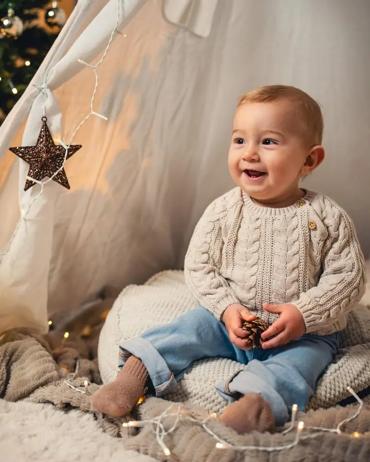
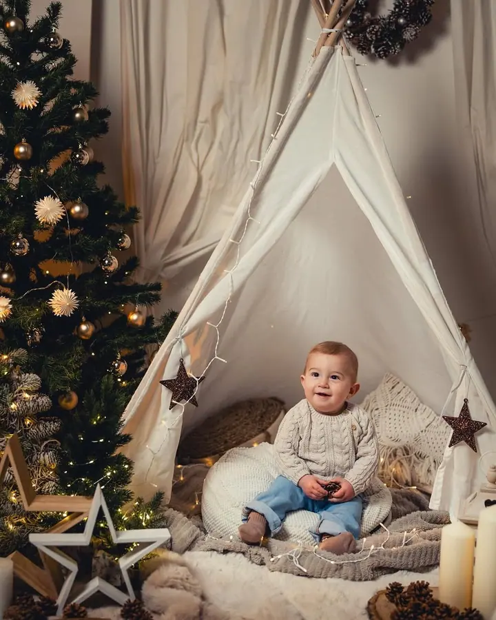
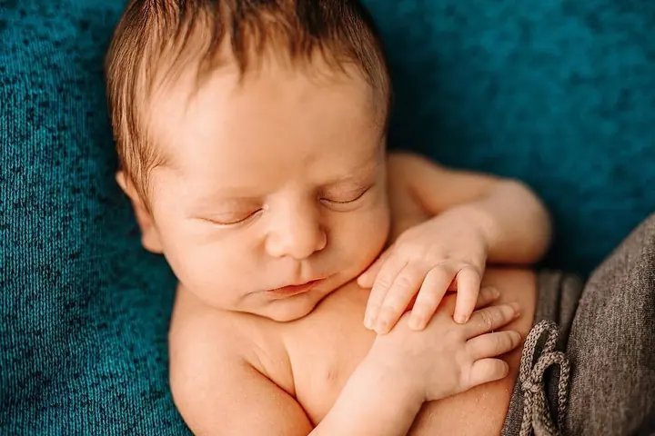

Ateliérové fotografování
Fotíme v našem ateliéru na Jaselské ulici, od miminek po celé rodiny. Když chcete ven, domluvíme i exteriérové focení.

Jmenuji se Jan Strnad a v našem ateliéru na Jaselské ulici v Kolíně fotíme miminka, děti i celé rodiny. Kulisy pro vás stavíme podle sezóny, před Vánoci třeba se stromke…
Rezervovat termínFotoateliér Kolín je místo, kam se chodí fotit miminka, děti, rodiny i maturanti. Fotíme v ateliéru, ale klidně vyrazíme i ven. Při objednávce si můžete vybrat fotografa, nebo nechat výběr na nás.


Kromě focení se staráme i o to, co bude s fotkami dál. Tiskneme velkoformátové fotografie až do velikosti 60×90 cm, panoramata, plátna napnutá na klínový rám nebo fotky kašírované na kapa desku.
Ateliér nežije jen u nás ve dvoře. S fotokoutkem jezdíme na plesy, festivaly a firemní akce, ateliér pronajímáme dalším fotografům a kdo se chce focení naučit, tomu nabízím individuální kurz.
Co fotím
Fotíme v našem ateliéru na Jaselské ulici, od miminek po celé rodiny. Když chcete ven, domluvíme i exteriérové focení.
Plnohodnotný ateliér přivezeme na vaši akci, ať jde o ples, festival, firemní event nebo veletrh.
Fotíme maturitní plesy, tabla a plakáty. Na ples vám postavíme i fotokoutek.
Učím individuální kurzy a workshopy fotografování. Kurz můžete dát i jako dárkový poukaz.
Postup
Vyplňte formulář nebo zavolejte. Napište, o jaké focení máte zájem a jestli chcete konkrétního fotografa.
Společně vybereme den a řekneme si, jestli budeme fotit v ateliéru, nebo venku, a co si s sebou vzít.
Přijedete k nám na Jaselskou 177. Vjezd je z ulice do dvora modrými vraty. Na focení si necháme čas, aby se všichni cítili dobře.
Z hotových fotek vyberete ty nejoblíbenější. Rádi vám je vytiskneme, i ve velkém formátu nebo na plátno.
Otázky
Na adrese Jaselská 177, Kolín III. Vjezd je z Jaselské ulice do dvora modrými vraty, doporučujeme jet ve směru od Prahy na Čáslav.
Ano. Kromě ateliérového focení nabízíme i exteriérové fotografování, stačí to uvést při objednávce.
Můžete. U našich fotografů si objednáte dárkový poukaz na jakékoliv focení, tisk fotografií nebo kurz fotografování.
Ano, fotokoutek s plnohodnotným ateliérem vozíme na plesy, festivaly, firemní eventy i veletrhy. Napište nám termín a místo.